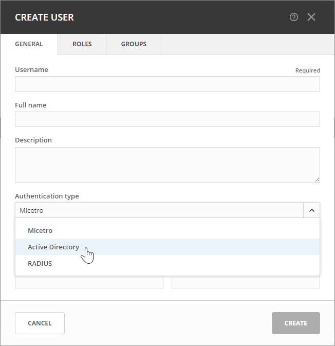

Active Directory User Authentication
The Active Directory (AD) user authentication feature enables users to authenticate themselves through the AD login system before gaining access to Micetro. This functionality is particularly useful in large installations, streamlining password management by eliminating the need for users to maintain passwords across multiple platforms. Any password rules (such as password expiry and minimum password length) that have been applied within the organization will automatically apply to Micetro.
Active Directory User Authentication vs. Local User Authentication
Even with AD user authentication enabled, users must still be created and assigned privileges within Micetro. The only difference between AD and local user authentication lies in the authentication process: when AD user authentication is enabled, users are authenticated via the AD user authentication system before accessing Micetro. With RADIUS user authentication, user passwords are not stored within Micetro.
Note
Only one authentication method can be assigned per user, but different users can use different authentication methods. This allows some users to log in using AD user authentication while others utilize local user authentication.
Enabling AD User Authentication Using Active Directory
AD user authentication using Active Directory is only possible when you run Micetro Central on a Windows machine. The machine running Micetro Central must be a member in an Active Directory domain or forest. No specific configuration is needed for Micetro Central for user authentication using Active Directory.
Configuring Users for AD Authentication
To enable user login in Micetro, users must exist in the Micetro user database. Without existing records in this database, users cannot log in, even with valid credentials in the RADIUS login system.
To configure a user for AD user authentication:
Navigate to and select Users in the filtering sidebar.
To add a new user, click Create. Fill in the details, selecting Active Directory from the Authentication type drop-down list. For more information about how to create users, see Users.(If Micetro Central is not running on a Windows machine, only the Micetro authentication method will be available.)
To modify an existing user, double-click the user’s name to display the Edit Properties dialog box and select Active Directory from the Authentication type drop-down list
Note
When the AD authentication method is selected, the Password and Email address fields are disabled, since passwords are not stored in Micetro.
{kind=link}
Active Directory Single Sign-On
You can enable a single sign-on so that Active Directory users do not have to authenticate when logging in through Micetro.
To enable Active Directory Single Sign-on:
Navigate to and select System Settings in the filtering sidebar.
Select Authentication and then the Allow single sign-on option.
Click Save.
Application Login
When utilizing AD user authentication without enabling single sign-on, the login process in Micetro remains unchanged. It’s essential to ensure that the entered username matches the stored username in Micetro. If a distinguished username is used, it must be entered identically when logging in.
Group Level Active Directory User Authentication
The Group Level AD user authentication mechanism enables you to define user access privileges based on group membership within the AD structure. To grant a user access to Micetro, you need to create a group in the AD with a matching name to a group in Micetro and assign the AD user to that group. Multiple groups can be created in the AD to match group names in Micetro.
Login process for users with Group Level AD authentication:
The user enters their username and password in Micetro.
Micetro verifies the credentials using the AD authentication mechanism. Upon successful validation, Micetro retrieves the user’s group memberships from the AD.
Micetro compares the user’s AD group list (by group name) with the local group list in Micetro. If a match is found, the user is granted access with the privileges specified in the corresponding local group. If no match is found, the login attempt fails.
Configuring Groups for AD Group Level Authentication
When using AD Group level authentication, you need to specify the Micetro groups that should be used for verifying group membership.
Navigate to and select Groups under Access Management in the filtering sidebar.
Double-click the group you wish to configure for AD. If the desired group is not listed, you’ll need to add it. For more information about how to create groups, see Groups.
Ensure the group name includes the owning domain name as a prefix. For instance, if the Active Directory domain is “MYDOMAIN” and contains the group “MM-ReadOnly”, the group name should be “MYDOMAINMM-ReadOnly”.
{kind=link}
Click Save.
Note
Group Level Active Directory user authentication is only supported when Micetro Central is running on a Windows machine that is a member of an Active Directory domain or forest.
Configuring Users and Access Privileges
With Group Level AD authentication, there’s no need to create users in Micetro. Instead, user access is determined by their group membership within the AD.